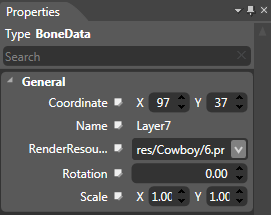
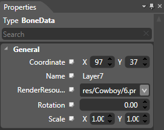
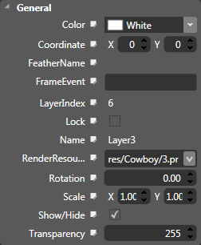

Properties Panel
Introduction
 

The Properties panel displays the attributes of currently selected skeleton or textures. The display of properties will be slightly different in physical and movie mode. The Movie mode (left picture) is richer than physical mode (right picture), but the two are synchronous. Those attributes in physical mode are just hidden rather than not existing.
Functions
Search
1. The Type field describes the currently selected widget.
2. Search: According to the user's input, checks for matching characteristics and attribute.
General Properties

Please review skeleton/texture general properties page.
Copyright © 2013 CocoStudio.org. All Rights Reserved. Version 1.0.0